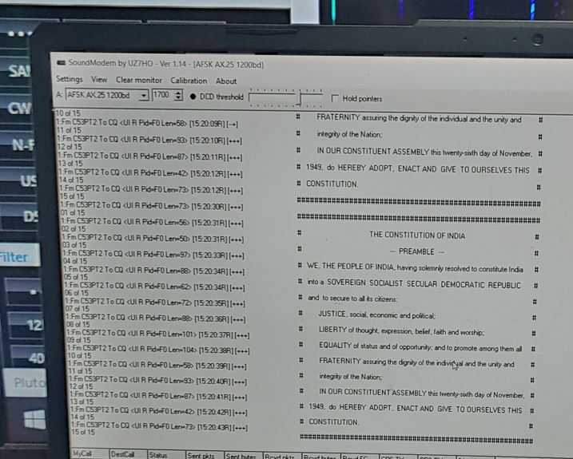

Coming back to the campus after my first vacation which was cut short to one month instead of two months, I was totally refreshed and was eager to get back to the ground station operations. My fifth semester started on 1st August 2022. Back at home during my vacations, I together with my family enjoyed the launch of PSLV C-53 mission. It was some what special for me to watch the launch with my family members because this time I was able to explain them some of the things which I know about the rocket and the satellite. I had no clue how unique was this PSLV launch from the other launches at that time. The main satellite was a Singaporean satellite. And as PSLV is the workhorse rocket which has much higher success rate for ISRO was definately going to put the satellite into its precise orbit. It did so, but the mission was not over at that stage itself. After returning back to campus, my friend ask me to come with him to ground station. It was night time something about 9pm. I was curious to know which other satellite are we going to track now and that too at this time. And was that really worth tracking that satellite by sacrificing our sleep🤨???
On that day, we just completed our first day of fifth semester and in the night we were back in ground station. After communicating with my friend, I got to know that we are going to track the fourth stage of the PSLV rocket which was launch on 30th June. All the tracking information for that stage was taken out from the open source available websites with some help from ISRO. We also had our super senior with us who was the head of the ground station at that time. He along with Priyadarshanam Sir (PD sir), and some scientists from VSSC, ISRO arrived in the ground station. The setup was been established and me and my friend were right and left hands of our senior. The pass was about to start. As soon as we received the signals from the fourth stage we started hearing the recording of the Preamble followed by National Anthem of our country. After all Why's and What's, we got to know that on the occassion of 75th Independence day, ISRO has decided to carry out this activity and encouraged many other Ham Radio Operators to receive the same signal which we did. Apart from this ISRO also performed Flag Hoisting on the Fourth stage platform of PSLV which was later been called as POEM which stands for PSLV Orbital Experimental Module. At that time little did we know that at some point of time in future we will get a chance to see this POEM stage and the complete satellite and payload intergration over this Fourth Stage. More on this will be shared in the next project.
First pass of the night was over and apart from just receiving the audio recordings we also had to decode the text embedded within the audio signal which reads out 15 lines of preamble. Softwares used for doing this was found out and then the recorded signals were passed through the software. As it was the first pass the elevation was not that high due to which the signal was slightly inconsistent because of which we could not decode all the 15 lines of text. Every time one or two lines were missing. PD sir and the other VSSC scientists decided to take all the upcoming passes and then try and decode the signals correctly. By the time the first pass and the post pass analysis was done, it was about 00:00 am in the midnight. PD sir also arranged a treat for us which was a breakfast from the mess. Idli, chutney and a coffee to keep us awake all the night. Walking back to the ground station in the cool breeze after a rainy day, PD sir relaxed us by discussing our first day of the fifth semester. He was the one who always encouraged us to participate in such ground station and SSPACE lab activities and projects and always tries to explain us the importance of these things over our academics.
Pass after pass we tried and at last were able to decode all the 15 lines of text within the preamble. along with us other ISRO ground stations situated in Banglore and Port Blair were also tracking the POEM platform. This was my first experience to get to know the work culture at ISRO. It was around 1:30am in the morning and we were fully stressed up. We were sitting on the chairs but the senior scientists were still trying to make the decoding better and better. On seeing their energy at such a time, we got pumped up to get back into working mode. But we were totally exhausted and had to attend classes on the next morning( in fact on the same morning). So we decided to move back to the hostel rooms. Me and my friend, we both had a habit of waking up early in the morning. At that night if someone would have seen us walking into the hostels would have surely thought "How these morning birds are still awake in the midnight😂😂????" The sleep I got that night was the most productive sleep I had till that date. Lot of such nights will be discussed in upcoming projects.
Finally it was the Independence Day, and after all the formal proceedings, it was time for the guest and directors to visit ground station and watch all the work we did. Our team got all the praises from the directors and guests on that day. ISRO also performed flag hoisting on the POEM stage in SPACE (IMG: Indian Flag and the Preamble with EARTH in the Background) We took nearly all the passes of POEM platform on that day and also recorded it for future use Video. We also shared our experience with our friends and showed them the work we did. For those friends who missed our show on that day have already realized it by sticking onto the article and coming up till here. More such experiences to be shared in the upcoming projects.